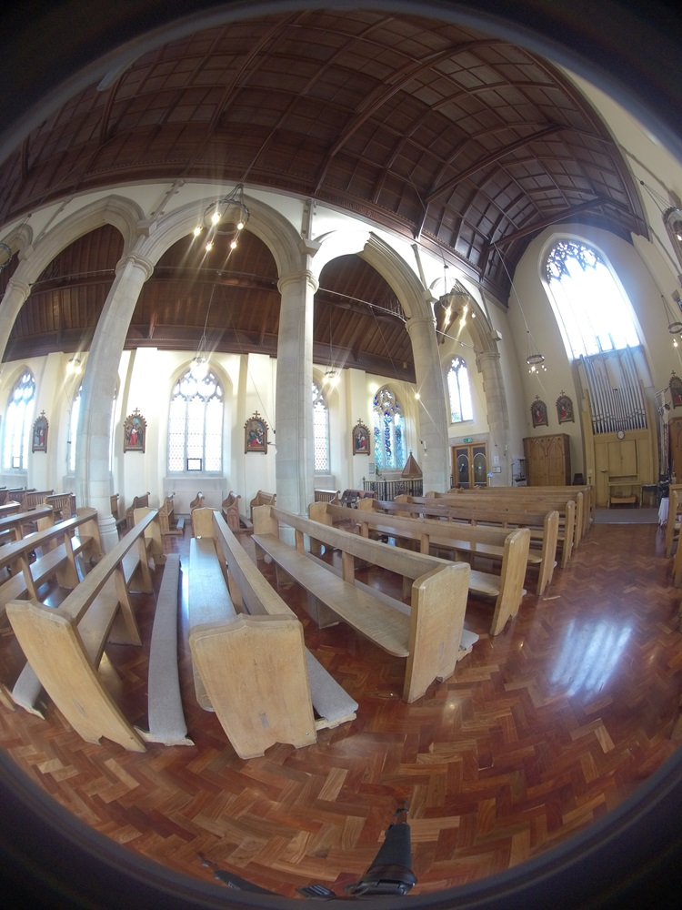
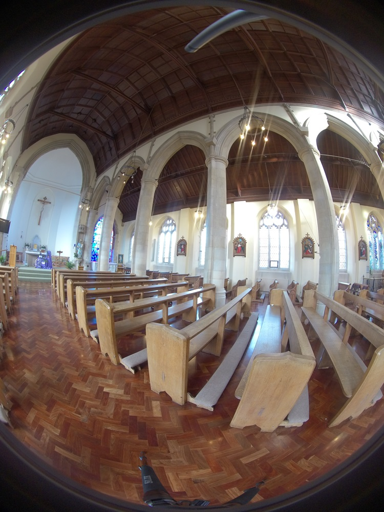
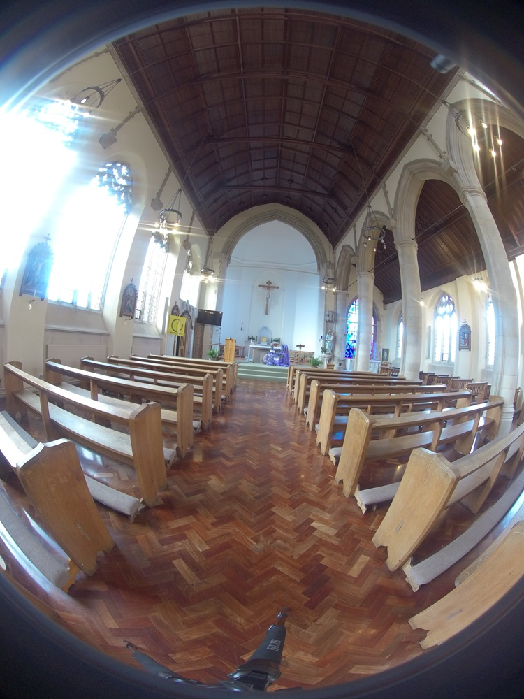
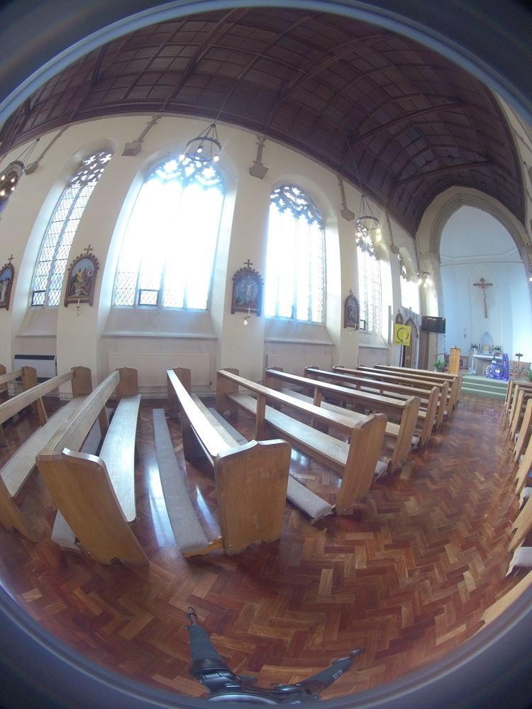
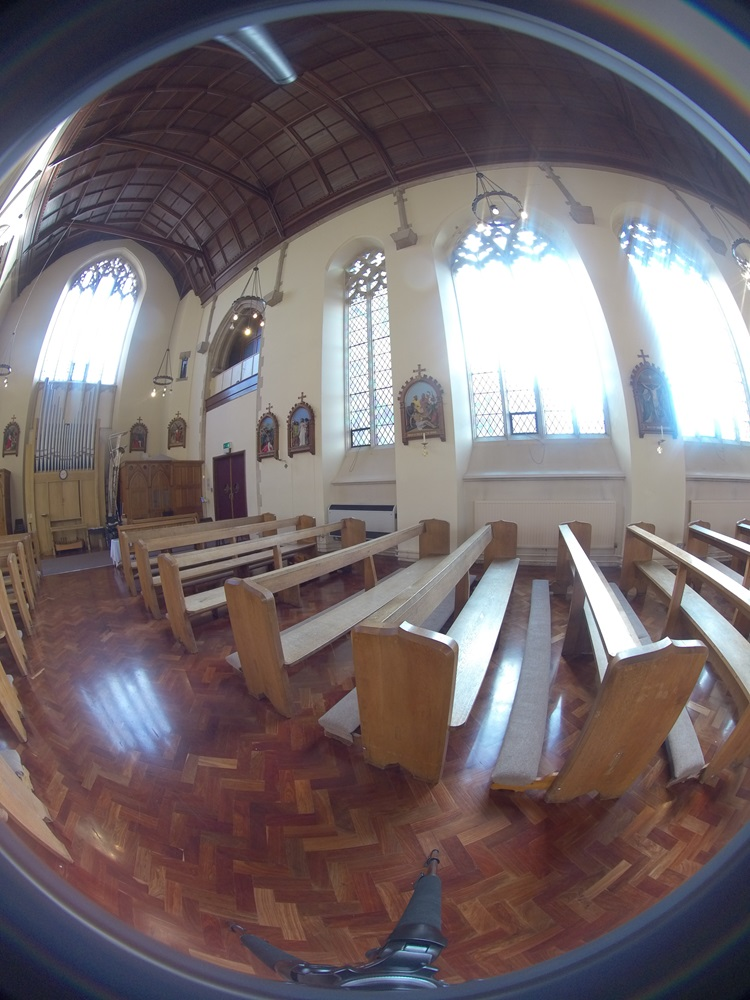
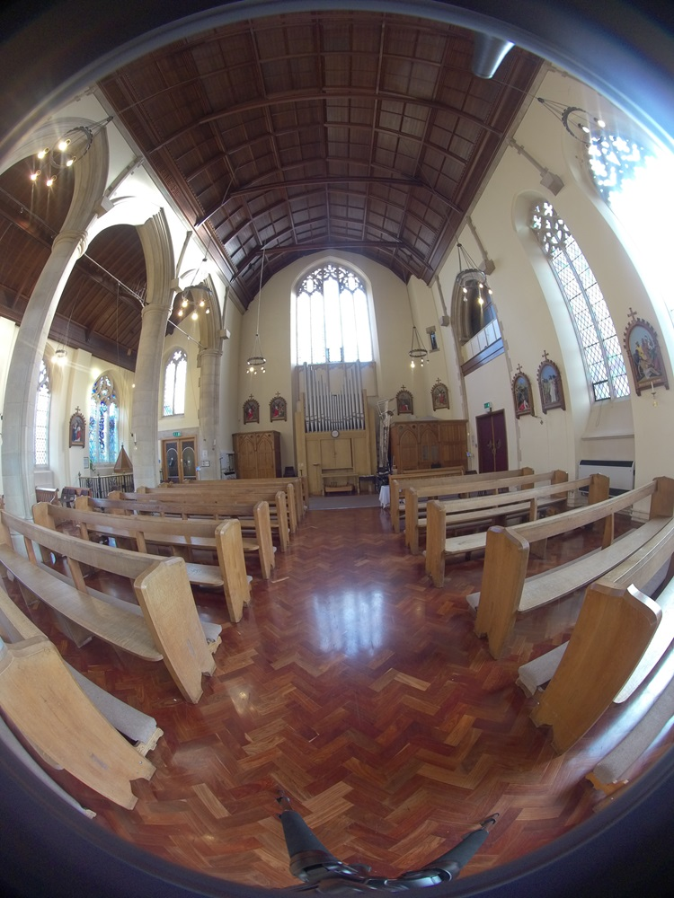

Content from Definition
Last updated on 2024-01-29 | Edit this page
Panorama photographs
These are photographs of a full or partial 360 horizontal view of their shooting point.
The are not fully spherical images and, although they can be mapped onto a sphere they lack of information on the top and the bottom part of the image, at most they can be mapped to a cylindrical projection.

{kind=link}
Spherical panorama photographs
These are special photographs of a full spherical representation of their shooting point.
This is usually a processed photo, also known as a photosphere or simply spherical panorama. It is an image that offers a complete 360-degree view of a scene in every direction. With special interactive viewers is it possible to explore the image as if we were standing right in the middle of it, experiencing the entire surroundings by simply dragging the image or tilting their device1.

{kind=link}
Content from Examples in Cultural Heritage
Last updated on 2024-01-29 | Edit this page
NICOLA PLEASE: Create a list similar to this:https://universityofbrighton.github.io/2023-exhibition-design/more-information.html
Here you can view some other examples of the UNESCO World Heritage Sites.
Content from Techniques for Capturing Images
Last updated on 2024-01-29 | Edit this page
Multiple-shot rotating (Pano Kit)
This technique uses a regular DSLR camera, a compact camera or a mobile phone, and a rotating mechanism such as the Matterport for DSLR cameras or the Insta360 Flow for mobile phones.
Wichever device you use the idea is to take interval timed photographs, covering the whole 360 horizontal and vertical area.
For vertical coverage it would be necessary one of the followings:
to use a wide angle lens in portrait mode for DSLR cameras
to use an adapter kit for mobile phones
If not using a wide angle lens it will be necessary to shoot 4 more photographs at 90 degrees (or 3 at 60 degrees) tilted to the top and to the bottom
This is a general guideline for shooting with regular cameras. A good rule is to overlap the photos for at least 1/3 of each sequential image. However there are many different lenses for DSLR cameras and it is important to know their characteristics, especially the FOV(Field of View) settings.
Here you can find a guideline of choosing the right amount of overlap depending on the field of view of the lenses.
On this page you can find a list of kit parts for shooting with this technique
Below is a comprehensive video of the whole process
How to shoot 360 panoramas with a DSLR, under Metareal, via YouTube
Multiple wide-angle lenses (spherical panorama camera/360 camera)
This techniques uses a camera with one or more fish-eye lenses such as the Insta360.
- Only one shot is necessary because multiple images of different angles are captured at the same time, covering the whole 360 spherical spectrum and overlapping each other.
|  |  |  |  |  |  |
Spherical unprocessed photo of St Mary’s Roman Catholic Church Brighton (UK), DSVMC University of Brighton, under DSVMC
The images are then processed with stitching software to produce a spherical single distorted image.
The algorithm used by many cameras such as the insta360 Pro 2 is called dense optical flow

This two techniques differs consistently: while the first needs more time to set-up but is achieved with cheaper equipment, the latter has the advantages to be faster in the setup and acquisition phase but with generally more elevated costs.
Below you can see a brief explanation of the differences in cost, quality and time of using one or the other technique.
What is the difference between a 360 Camera and an Asteroom Virtual Tour Kit?, under Asteroom, via YouTube.
Content from Camera setup and acquisition
Last updated on 2024-01-29 | Edit this page
Standard camera setup and acquisition
DSLR cameras
As we saw in the previous section this is one of the technique for taking spherical panorama photographs. When using this technique we should follow these specific steps:
Position the tripod at the view point where you want to take the photographs from and make sure is leveled with the bubble.
Mount the rotating (mount) mechanism on the tripod. The mount can be operated with a remote or with a specialised app.
Mount the camera on top of the rotating mount turn it on and make sure is leveled trough the camera level function.
Keep the camera straight using a level function of the camera or the level of the tripod.
Turn your camera in portrait mode, this is ideal when shooting spherical panoramas because of the extended vertical coverage.
Set camera to manual focus so that it does not change between different shots. In this istance try to focu to infinity if your lens permits such a function. To increase Focal Lenght try to use high high f-stops number, especially if you are outside in good light conditions.
Adjust the light settings for acquiring well lighted photographs. You should be already familiar with this settings. If you need some help you can consult this guideline
Start shooting by rotating the camera of a minimum 60 degree angle (this depends on the focal length of your lens) Please refer to the previous section to check the amount of pictures to be taken.
-
To speed up the process you can use a motorized camera mount synchronized with the timer of the camera. In this case:
Setup the number of photographs to be taken on your camera.
Setup the interval time on your rotating mount.
Start the process.
Compact cameras and mobile phones
Using a compact camera or a mobile phone to shoot spherical panorama photographs are slightly different than using a DSLR or a specialized 360 camera. To use this equipment you will need to follow this basic steps:
Position the tripod at the view point where you want to take the photographs from and make sure is leveled with the bubble.
Mount the rotating (mount) mechanism on the tripod.
Mount the camera or the mobile phone (with a tripod adapter) on top of the rotating mount and turn it on and make sure is leveled with the level function.
Adjust the light setting on the camera or on the app. Setting for acquiring well lighted photographs are the same setting for standard DSRL cameras (although there are some limitations on compact cameras and mobile phones). You should be already familiar with this settings. If you need some help you can consult this guideline
Start shooting the first photograph.
Rotate the mount at the desired angle degree (please refer to previous section) using the remote control to the next position.
Take the next shot until completing the full 360 rotation
-
To speed up the process you can use a compact camera motorized camera mount synchronized with the timer of the camera (if the camera offers this function otherwise take manual shots with the remote of the camera). In this case:
Setup the number of photographs to be taken on your camera.
Setup the interval time on your rotating mount.
Start the process.
-
To speed up the process with a mobile phone you can use a mobile phone mount like the monfrotto or the Insta360 Flow with the proprietary app. In this case:
Setup the app so that it will take a full 360 rotation.
Start the process.
360 camera setup and acquisition
The second technique for taking spherical panorama photographs, as we saw previously, is by using a 360 camera. Lets see the steps for setting up and achieving a faster shooting session. Although these steps are specific for the Insta360 Pro 2, they remain easily applicable to other types of 360 cameras:
Position the tripod at the view point where you want to take the photographs from and make sure is leveled with the bubble.
Mount the camera on the tripod.
Turn on the camera, turn on the wifi(or the bluetooth).
Turn on the bluetooth on your phone, find the camera an connect to it.
Open the control camera App and connect to it (for the Insta360 you can follow the tutorial on the app.
Keep the camera straight using a level function of the camera app.
Adjust the light setting on the app. Setting for acquiring well lighted photographs are the same setting for standard DSRL cameras. You should be already familiar with this settings. If you need some help you can consult this guideline
Start taking the first photographs. This will be a series of 6 photograph for mono viewing or 12 for stereo viewing.
Shooting tips
Use a good quality tripod for maximum stabilisation. However try to use a not too large tripod to avoid to much editing of the final image.
Keep the sun on the side of the camera and do not position the camera directly looking at the sun.
In all cases use a remote control or a dedicated app for taking photographs to avoid camera movements.
Alwyas try to acquire the photographs in raw format as they contain more colour information. Later it will be possible to convert them with softwre such as Raw Therapee
Content from Practical Exercise for 360° photography
Last updated on 2024-01-29 | Edit this page
NICOLA PLEASE: explain with text how a practical exercise will be done. This does not have to be long. It works as an introduction to how people will do the exercise and can work for the long term usage of the resource.
Content from Processing and Stitching
Last updated on 2024-01-29 | Edit this page
Dowloading and organizing images onto the computer
Once the images are acquired they will need to be saved on local disk in order to be processed. Each cameras has its own software to save the images.
In this workshop we are going to use the Insta360 Pro2 stiching software.
For other types of 360 cameras please follow the specific instructions of each camera, however it will be usually sufficient to download the images by connecting the camera via usb or by extracting the SD card from the camera and inserting it on a card reader of the PC.
Using a suitable name which reflects your project, transfer all images into a folder.
Good practice includes:
SH
ResourceIDifExistent_NameofObject_DateProcessedinFormatYY.MM.DDWithin this folder, create another one named images. Copy the images from the camera into the images folder.
Turn on the camera
Start by going to storage device on the camera
Connect the camera with the LAN cable to the computer (in this case if you also need internet connection pleas use your WIFI)
Enter the IP address of the camera into your file explorer: 192.168.1.188 (for Mac users go to connect to server and type 192.168.1.188 then connect as guest and choose pro2)
Check that all the files are there
Open the Sticher software and go to the Cam file manager and click import Method 2
Type the IP into the address bar 192.168.1.188
Select the SDcard folder
Click import to local drive
Select the location above mentioned and import the images
The basic step to connect the Insta360 Pro2 camera can be also followed on the video tutorial below starting from part 2 at 1.00 min or found on chapter one of the Insta360 Pro2 Manual
Insta360 Pro 2 Tutorial – Importing Files, under Insta360, via YouTube
Stitching the images
The process of stitching images after have been acquired and downloaded to the computer also differ from software to software. Although not compulsory it is a good practice to learn the software that comes with the camera, especially when the camera is a professional one.
The basic steps for stitching the images are:
Open the Insta360 Stitcher
Drag the folder containing the images to the left window of the interface
-
Adjust the setting on the right side of the interface:
- Content type: monoscopic
- Stitching mode: new optical flow
- Sampling type: fast
- Blender type : auto
- Leave the other setting and click Preview Stitching effect
- Try Zenith optimization at the bottom of the window
- Drag the image if you want to change the center viewing point
- Close the window and go to output settings
- choose the resolution -choose the output folder (the one you set above)
- choose the file name and extension (Usually .jpg unless you need uncompressed file, then choos .tiff)
- Click stitch now
Those instructions can be followed in this video tutorial:
Insta360 Pro 2 Tutorial – Stitching 360 Photos in Stitcher, under Insta360, via YouTube
For a full process you can also follow the video below
Using the Insta360 pro 2, under Joseph Farbrook, via YouTube
Content from Viewing and Publishing
Last updated on 2024-01-29 | Edit this page
Types of projections
When we want to visualise 360 degrees photographs, we go trough the process of capturing flat images and mapping them onto a surface. This allows the viewer a degree of freedom to explore the image by turning around the virtual camera left, right, up and down.
For this, the software maps the photographs onto a sphere or cube to interactively view them.
Although for this workshop we are using an automatic 360 camera, it is important to understand the different field of view settings when using a normal camera.
There are different types of projection for mapping panorama images onto a flat surface, including:
- Equirectangular
- Rectilinear
- Cylindrical
- Mercator
- Fisheye
- Sinusoidal
- Stereographic
This Cambridge In Color websiteoffers comprehensive information on these types.
The stitching software that we used for this workshop returns 360 images with an Equirectangular projection, however on Cambridge in colour website you can further learn about the technicality of the different types of projections.
For advanced learning purposes it is also advisable to experiment windows programs such as PTGui or PTAssembler, which they give full control in creating panorama images from single flat photographs.
There are several methods for viewing and publishing 360 panoramas images:
Flat panoramic images (no distortion - orthogonal)
Usually these images are considered panoramic view on the horizontal axis but cannot be joined to form a full 360 spherical representation.
{kind=link}
They are useful for building measuring purposes and landscape representations. All modern compact cameras they have a mode to produce this kind of images by automatically stitching several photos taken. The amount of distortion and a good stitching result will depend on the lens used.
With a telephoto lens there will be necessary more images in order to cover the full 360 horizontal area.
With a wider angle lens less photos will be required to cover the same amount of area, however the result can present more distortion errors and less accurate stitching result.

{kind=link}
Flat 360 panoramic images (with distortion)
These are the unwrapped version of the final images resulting by stitching the photograaph taken with a wide angle lens. They can be fully mapped onto a 360 viewer
{kind=link}

{kind=link}
Fish-eye lenses images
These are the original files that are taken with a fish-eye lens usually they go up to 180 degree of field of view and can be mapped onto a 3d viewer only after processing them with a stitching software or with a viewer that can project spherical 360 images. In any case they need more then one image in order to cover the full 360 degree spherical spectrum.

{kind=link}
Mapped onto a 360 viewer
These images are the final mapped 360 photographs coming from the unrwapped images after stiching several fish-eye lenses photographs. Although there are several commercial and non-commercial viewers. We are going to use the Pannellum Online viewerfor its simplicity and the possibility to directly publishing 360 images online.
Go back to the setup page and choose one of the church’s image by right clicking on it and getting the link, then paste it on the viewer.
To view your own produced image please upload them to a site that supports CORS, e.g. Imgur and get the link.
Content from Practical Exercise for Viewer 360° photography
Last updated on 2024-01-29 | Edit this page
NICOLA PLEASE Describe in a comprehensive text how an exercise in done separately from presenting the viewing method (as in the previous episode)
Content from Additional Links
Last updated on 2024-01-29 | Edit this page